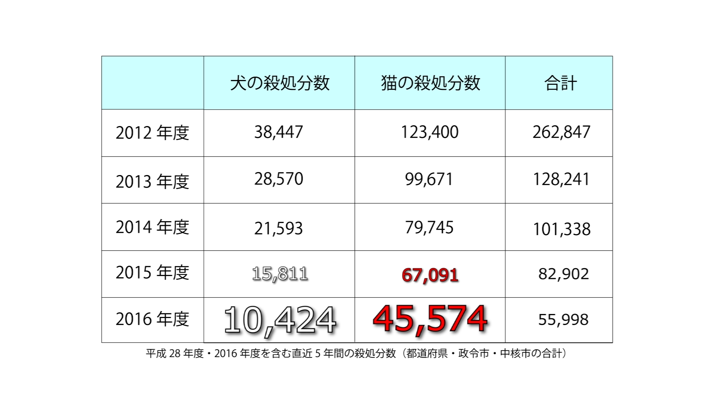

ねこのいのち
https://youtu.be/ew803B4dWnIドキュメンタリーの課題作品で作成しました。
近所に野良猫が住み着いており、それで何かできないかと考えたのがきっかけです。
取材や撮影を繰り返すうちにすっかり猫派になり、
将来猫たちのためになにかできないか模索中です。
作品時間：14 分 制作期間：3ヶ月
撮影機材：一眼レフ 8Xi キーワード 保護ネコ×ドキュメンタリー


出演者
保護猫カフェねこのおうちの店主さんと、
大津市動物愛護センターの水田さんに事前にアポイントを取り取材しました。
保護猫の話とブリーダーの話を二つの目線で伝えたいと思い、協力していただきました。
資料の作成
資料映像の部分は分かりやすさを追及して作成しました。
左の資料はブリーダーの犬猫の出入りの数を愛護センターが管理してる説明の資料シーンです。
犬猫イラストを動かしてわかりやすくしました。
2012 年～ 2016 年までの犬猫の殺処分数の表です
平井さんが話しているときに見ていた資料を見やすくし、
話に合わせて文字を出現させてさらにわかりやすくしました。
映像の後半にあるイングランドで新しく制定された、ルーシー法の内容です。
ナレーションが一部紹介するのでここは詳しく記載しました。
youtube で発表するので一時停止できるため細かく文字を載せても問題ないと判断しました。